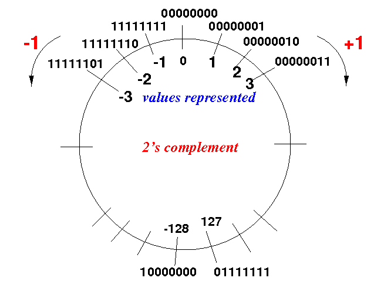
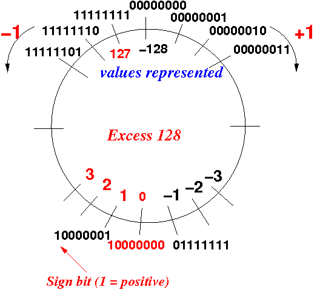
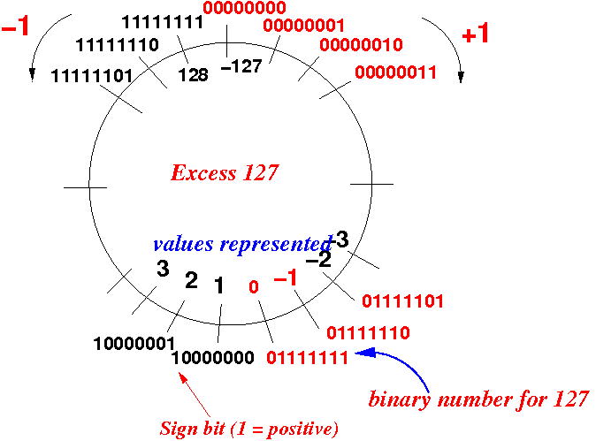

|
This results in the following assignment scheme of binary numbers and values:
|  |
|
|
This results in the following assignment scheme of binary numbers and values:
|  |
Code Value
================
00000000 -128 <--- smallest negative value with 8 bits (-27)
00000001 -127
.....
01111000 -8
01111001 -7
01111010 -6
01111011 -5
01111100 -4
01111101 -3
01111110 -2
01111111 -1
10000000 0
10000001 1
10000010 2
10000011 3
10000100 4
10000101 5
10000110 6
10000110 6
10000111 7
10001000 8
.....
11111111 127 <--- largest positive value with 8 bits (27-1)
Note:
|
|
|
This results in the following assignment scheme of binary numbers and values:
|  |
Code Value
================
00000000 -127 <--- smallest negative value with 8 bits (-27)
00000001 -126
.....
01111000 -7
01111001 -6
01111010 -5
01111011 -4
01111100 -3
01111101 -2
01111110 -1
01111111 0
10000000 1
10000001 2
10000010 3
10000011 4
10000100 5
10000101 6
10000110 7
10000110 8
10000111 9
10001000 10
.....
11111111 128 <--- largest positive value with 8 bits (27-1)
Note:
|
|